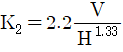
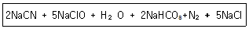
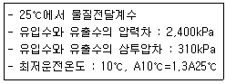
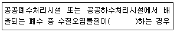
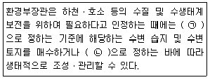

수질환경기사 (2019-03-03 기출문제)
1과목: 수질오염개론
1. 물의 특성에 관한 설명으로 옳지 않은 것은?
- 물은 2개의 수소원자가 산소원자를 사이에 두고 104.5° 의 결합각을 가진 구조로 되어 있다.
- 물은 극성을 띠지 않아 다양한 물질의 용매로 사용된다.
- 물은 유사한 분자량의 다른 화합물보다 비열이 매우 커 수온의 급격한 변화를 방지해 준다.
- 물의 밀도는 4℃에서 가장 크다.
(정답률: 86%)

2. 하천의 자정작용에 관한 설명으로 옳지 않은 것은?
- 하천의 자정작용은 일반적으로 겨울보다 수온이 상승하여 자정계수(f)가 커지는 여름에 활발하다.
- β중부수성 수역(초록색)의 수질은 평지의 일반하천에 상당하며 많은 종류의 조류가 출현한다(Kolkwitz-Marson 법 기준)
- 하천에서 활발한 분해가 일어나는 지대는 혐기성세균이 호기성세균을 교체하며 fungi는 사라진다(Whipple의 4지대 기준)
- 하천이 회복되고 있는 지대의 용존산소가 포화될 정도로 증가한다(Whipple의 4지대 기준)
(정답률: 70%)
3. 오염물질의 희석 및 확산작용에 대한 내용으로 틀린 것은?
- 수계에 오염물질이 유입되면 Brown 운동, 밀도차, 온도차, 농도차로 인해 발생된 밀도 흐름이나 난류에 의해서 희석 및 확산된다.
- 폐쇄성수역은 수질밀도류보다는 난류가 희석에 큰영향을 준다.
- 바다는 오염물질의 방류지점에서 생긴 분출확산, 밀도류, 밀물, 썰물, 파도, 표층부의 난류확산으로 희석된다.
- 하천수는 상류에서 하류로의 오염물질 이동이 희석에 큰 영향을 준다.
(정답률: 75%)
4. 다음의 기체 법칙 중 옳은 것은?
- Boyle의 법칙 : 일정한 압력에서 기체의 부피는 절대온도에 정비례한다.
- Henry의 법칙 : 기체와 관련된 화학반응에서는 기체와 생성되는 기체의 부피 사이에 정수관계가 있다.
- Graham의 법칙 : 기체의 확산속도(조그마한 구멍을 통한 기체의 탈출)는 기체 분자량의 제곱근에 반비례 한다.
- Gay-Lussac의 결합 부피 법칙 : 혼합 기체내의 각 기체의 부분압력은 혼합물 속의 기체의 양에 비례한다.
(정답률: 75%)
5. 수은(Hg) 중독과 관련이 없는 것은?
- 난청, 언어장애, 구심성 시야협착, 정신장애를 일으킨다.
- 이따이이따이병을 유발한다.
- 유기수은은 무기수은 보다 독성이 강하며 신경계통에 장해를 준다.
- 무기수은은 황화물 침전법, 활성탄 흡착법, 이온교환법 등으로 처리할 수 있다.
(정답률: 84%)
6. 지하수의 특성에 관한 설명으로 옳지 않은 것은?
- 염분함량이 지표수보다 낮다.
- 주로 세균(혐기성)에 의한 유기물 분해작용이 일어난다.
- 국지적인 환경조건의 영향을 크게 받는다.
- 빗물로 인하여 광물질이 용해되어 경도가 높다.
(정답률: 79%)
7. 호수의 성층현상에 대해 틀린 것은?
- 수심에 따른 온도변화로 인해 발생되는 물의 밀도차에 의하여 발생한다.
- Thermocline(약층)은 순환층과 정체층의 중간층으로 깊이에 따른 온도변화가 크다.
- 봄이 되면 얼음이 녹으면서 수표면 부근의 수온이 높아지게 되고 따라서 수직운동이 활발해져 수질이 악화된다.
- 여름이 되면 연직에 따른 온도경사와 용존산소 경사가 반대 모양을 나타낸다.
(정답률: 80%)
8. 해수의 특성에 대한 설명으로 옳은 것은?
- 염분은 적도해역과 극해역이 다소 높다.
- 해수의 주요성분 농도비는 수온, 염분의 함수로 수심이 깊어질수록 증가한다.
- 해수의 Na/Ca비는 3~4정도로 담수보다 매우 높다.
- 해수 내 전체 질소 중 35% 정도는 암모니아성 질소, 유기질소 형태이다.
(정답률: 72%)
9. 수질오염물질별 인체영향(질환)이 틀리게 짝지어진 것은?
- 비소 : 반상치(법랑반점)
- 크롬 : 비중격 연골천공
- 아연 : 기관지 자극 및 폐염
- 납 : 근육과 관절의 장애
(정답률: 76%)
10. 탈질화와 가장 관계가 깊은 미생물은?
- Nitrosomonas
- Pseudomonas
- Thiobacillus
- Vorticella
(정답률: 73%)
11. 섬유상 유황박테리아로 에너지원으로 황화수소를 이용하며 균체에 황입자를 축적하는 것은?
- sphaerotilus
- zooglea
- cyanophyia
- beggiatoa
(정답률: 74%)
12. 3g의 아세트산(CH3COOH)을 증류수에 녹여 1L로 하였다. 이 용액의 수소이온 농도는? (단, 이온화 상수값은 1.75×10-5이다.)
- 6.3×10-4 mol/L
- 6.3×10-5 mol/L
- 9.3×10-4 mol/L
- 9.3×10-5 mol/L
(정답률: 65%)
13. 최근 해양에서의 유류 유출로 인한 피해가 증가하고 있는데, 유출된 유류를 제거하는 방법으로 적당하지 않은 것은?
- 계면활성제를 살포하여 기름을 분산시키는 방법
- 미생물을 이용하여 기름을 생화학적으로 분해하는 방법
- 오일펜스를 띄워 기름의 확산을 차단하는 방법
- 누출된 기름의 막이 두꺼워졌을 때 연소시키는 방법
(정답률: 76%)
14. 물의 순환과 이용에 관한 설명으로 틀린 것은?
- 지구전체의 강수량은 대략 4×1014m3/년으로서 그 중 약 1/4 가량이 육지에 떨어진다.
- 지구상의 물의 전체량의 약 97%가 해수이다.
- 담수중 50%가 곧 바로는 이용이 불가능하다.
- 담수중 하천수가 차지하는 비율은 약 0.32% 정도이다.
(정답률: 79%)
15. 이상적 plug flow에 관한 내용으로 옳은 것은?
- 분산 = 0, 분산수 = 0
- 분산 = 0, 분산수 = 1
- 분산 = 1, 분산수 = 0
- 분산 = 1, 분산수 = 1
(정답률: 72%)
16. 바닷물 중에는 0.⑤4M의 MgCl2가 포함되어 있을때 바닷물 250ml에 포함되어 있는 MgCl2의 양(g)은? (단, 원자량 Mg = 24.3, Cl = 35.5)
- 약 0.8g
- 약 1.3g
- 약 2.6g
- 약 3.9g
(정답률: 67%)
17. BaCO3의 용해도적 Ksp=8.1×10-9일 때 순수한 물에서 BaCO3의 몰용해도(mol/L)는?
- 0.7×10-4
- 0.7×10-5
- 0.9×10-4
- 0.9×10-5
(정답률: 63%)
18. BOD5가 270mg/L이고, COD가 450mg/L인 경우, 탈산소계수(K1)의 값이 0.1/day 일 때, 생물학적으로 분해 불가능한 COD는? (단, BDCOD = BODu 상용대수 기준)
- 약 55mg/L
- 약 65mg/L
- 약 75mg/L
- 약 85mg/L
(정답률: 63%)
19. 하천의 단면적이 350m2, 유량이 428400m3/hr, 평균수심 1.7m일 때 탈산소계수가 0.12/day인 지점의 자정계수는? (단,

식에서 단위는 V[m/sec], H[m]이다.)- 0.3
- 1.6
- 2.4
- 3.1
(정답률: 52%)
20. NBDCOD가 0일 경우 탄소(C)의 최종 BOD와 TOC 간의 비(BODu/TOC)는?
- 0.37
- 1.32
- 1.83
- 2.67
(정답률: 67%)
2과목: 상하수도계획
21. 말굽형 하수관거의 장점으로 옳지 않은 것은?
- 대구경 관거에 유리하며 경제적이다.
- 수리학적으로 유리하다.
- 단면형상이 간단하여 시공성이 우수하다.
- 상반부의 아치작용에 의해 역학적으로 유리하다.
(정답률: 74%)
22. 강우강도에 대한 설명 중 틀린 것은?
- 강우강도는 그 지점에 내린 우량을 mm/hr단위로 표시한 것이다.
- 확률강우강도는 강우강도의 확률적 빈도를 나타낸 것이다.
- 범람의 피해가 적을 것으로 예상될 때는 재현기간 2~5년의 확률강우강도를 채택한다.
- 강우강도가 큰 강우일수록 빈도가 높다.
(정답률: 68%)
23. 하수배제 방식 중 합류식에 관한 설명으로 알맞지 않은 것은?
- 관로계획 : 우수를 신속히 배수하기 위해 지형조건에 적합한 관거망이 된다.
- 청천시의 월류 : 없음
- 관거오접 : 없음
- 토지이용 : 기존의 측구를 폐지할 경우는 뚜껑의 보수가 필요하다.
(정답률: 56%)
24. 급속여과지에 대한 설명으로 잘못된 것은?
- 여과 및 여과층의 세척이 충분하게 이루어질 수 있어야 한다.
- 급속여과지는 중력식과 압력식이 있으며 압력식을 표준으로 한다.
- 여과면적은 계획정수량을 여과속도로 나누어 계산한다.
- 여과지 1지의 여과면적은 150m2이하로 한다.
(정답률: 74%)
25. 상수처리를 위한 응집지의 플록형성지에 대한 설명중 틀린 것은?
- 플록형성지는 혼화지와 침전지 사이에 위치하고 침전지에 붙여서 설치한다.
- 플록형성시간은 계획정수량에 대하여 20∼40분간을 표준으로 한다.
- 플록형성지 내의 교반강도는 하류로 갈수록 점차 감소시키는 것이 바람직하다.
- 플록형성지에 저류벽이나 정류벽 등을 설치하면 단락류가 생겨 유효저류시간을 줄일 수 있다.
(정답률: 67%)
26. 하수처리계획에서 계획오염부하량 및 계획유입수질에 관한 설명으로 틀린 것은?
- 계획유입수질 : 하수의 계획유입수질은 계획오염부하량을 계획1일평균오수량으로 나눈값으로 한다.
- 공장폐수에 의한 오염부하량 : 폐수배출부하량이 큰 공장은 업종별 오염부하량 원단위를 기초로 추정하는 것이 바람직하다.
- 생활오수에 의한 오염부하량 : 1인1일당 오염부하량 원단위를 기초로 하여 정한다.
- 관광오수에 의한 오염부하량 : 당일관광과 숙박으로 나누고 각각의 원단위에서 추정한다.
(정답률: 55%)
27. 펌프의 형식 중 베인의 양력작용에 의하여 임펠러내의 물에 압력 및 속도에너지를 주고 가이드베인으로 속도에너지의 일부를 압력으로 변환하여 양수작용을 하는 펌프는?
- 원심펌프
- 축류펌프
- 사류펌프
- 플랜지 펌프
(정답률: 58%)
28. 상수시설 중 배수지에 관한 설명으로 틀린 것은?
- 유효용량은 시간변동조정용량, 비상대처용량을 합하여 급수구역의 계획1일최대급수량의 12시간분 이상을 표준으로 한다.
- 부득이한 경우 외에는 배수지를 급수지역의 중앙 가까이 설치한다.
- 유효수심은 1~2m 정도를 표준으로 한다.
- 자연유하식 배수지의 표고는 최소동수압이 확보되는 높이여야 한다.
(정답률: 68%)
29. 펌프의 운전 시 발생되는 현상이 아닌 것은?
- 공동현상
- 수격작용(수충작용)
- 노크현상
- 맥동현상
(정답률: 68%)
30. 유출계수가 0.65인 1km2의 분수계에서 흘러내리는 우수의 양(m3/sec)은? (단, 강우강도 = 3mm/min, 합리식 적용)
- 1.3
- 6.5
- 21.7
- 32.5
(정답률: 61%)
31. 표준활성슬러지법에 관한 내용으로 틀린 것은?
- 수리학적 체류시간은 6~8시간을 표준으로 한다.
- 반응조내 MLSS 농도는 1500~2500mg/L 를 표준으로 한다.
- 포기조의 유효수심은 심층식의 경우 10m를 표준으로 한다.
- 포기조 여유고는 표준식은 30~60cm 정도를 표준으로 한다.
(정답률: 44%)
32. 상수처리를 위한 침사지 구조에 관한 기준으로 옳지 않은 것은?
- 지의 상단높이는 고수위보다 0.3~0.6m의 여유고를 둔다.
- 지내 평균유속은 2~7cm/s를 표준으로 한다.
- 표면부하율은 200~500mm/min을 표준으로 한다.
- 지의 유효수심은 3~4m를 표준으로 하고 퇴사심도를 0.5~1m로 한다.
(정답률: 58%)
33. 호소, 댐을 수원으로 하는 취수문에 관한 설명으로 틀린 것은?
- 일반적으로 중, 소량 취수에 쓰인다.
- 일반적으로 취수량을 조정하기 위한 수문 또는 수위조절판(stop log)를 설치한다.
- 파랑, 결빙 등의 기상조건에 영향이 거의 없다.
- 하천의 표류수나 호소의 표층수를 취수하기 위하여 물가에 만들어지는 취수시설이다.
(정답률: 72%)
34. 계획급수량 결정 시, 사용수량의 내역이나 다른 기초자료가 정비되어 있지 않은 경우 산정의 기초로 사용할 수 있는 것은?
- 계획1인1일최대급수량
- 계획1인1일평균급수량
- 계획1인1일평균사용수량
- 계획1인1일최대사용수량
(정답률: 36%)
35. 농축 후 소화를 하는 공정이다. 농축조에서의 건조슬러지가 1m3이고, 소화공정에서 VSS 60%, 소화율 50%, 소화 후 슬러지의 함수율이 96%일 때 소화 후 슬러지의 부피(m3)는?
- 0.7
- 0.9
- 18
- 36
(정답률: 45%)
36. 슬러지탈수 방법 중 가압식 벨트프레스 탈수기에 관한 내용으로 옳지 않는 것은? (단, 원심탈수기와 비교)
- 소음이 적다.
- 동력이 적다.
- 부대장치가 적다.
- 소모품이 적다.
(정답률: 65%)
37. 정수방법인 완속여과방식에 관한 설명으로 틀린 것은?
- 약품처리가 필요 없다.
- 완속여과의 정화는 주로 생물작용에 의한 것이다.
- 비교적 양호한 원수에 알맞은 방식이다.
- 부지 부지면적이 적다.
(정답률: 68%)
38. 화학적 응집에 영향을 미치는 인자의 설명 중 잘못된 내용은?
- 수온 : 수온 저하 시 플록형성에 소요되는 시간이 길어지고, 응집제의 사용량도 많아진다.
- pH : 응집제의 종류에 따라 최적의 pH조건을 맞추어 주어야 한다.
- 알칼리도 : 하수의 알칼리도가 많으면 플록을 형성하는데 효과적이다.
- 응집제 양 : 응집제 양을 많이 넣을수록 응집효율이 좋아진다.
(정답률: 69%)
39. 토출량 20m3/min, 전양정 6m, 회전속도 1200rpm인 펌프의 비교회전도는?
- 약 1300
- 약 1400
- 약 1500
- 약 1600
(정답률: 70%)
40. 정수시설 중 플록형성지에 관한 설명으로 틀린 것은?
- 기계식교반에서 플록큐레이터(flocculator)의 주변속도는 5~10cm/sec를 표준으로 한다.
- 플록형성시간은 계획정수량에 대하여 20~40분간을 표준으로 한다.
- 직사각형이 표준이다.
- 혼화지와 침전지 사이에 위치하고 침전지에 붙여서 설치한다.
(정답률: 67%)
3과목: 수질오염방지기술
41. 염소 소독의 장ㆍ단점으로 틀린 것은? (단, 자외선 소독과 비교 기준)
- 소독력 있는 잔류염소를 수송관거 내에 유지시킬 수 있다.
- 처리수의 총용존고형물이 감소한다.
- 염소접촉조로부터 휘발성 유기물이 생성된다.
- 처리수의 잔류독성이 탈염소과정에 의해 제거되어야 한다.
(정답률: 71%)
42. 활성슬러지법과 비교하여 생물막 공법의 특징이 아닌 것은?
- 적은 에너지를 요구한다.
- 단순한 운전이 가능하다.
- 2차침전지에서 슬러지 벌킹의 문제가 없다.
- 충격독성부하로부터 회복이 느리다.
(정답률: 55%)
43. 질산화 미생물의 전자공여체로 가장 거리가 먼 것은?
- 메탄올
- 암모니아
- 아질산염
- 환원된 무기성 화합물
(정답률: 56%)
44. 포기조 내의 혼합액 중 부유물 농도(MLSS)가 2000g/m3, 반송슬러지의 부유물 농도가 9576g/m3 이라면 슬러지 반송률은? (단, 유입수내 SS는 고려하지 않음)
- 23.2
- 26.4
- 28.6
- 32.8
(정답률: 58%)
45. 정수처리시 적용되는 랑게리아 지수에 관한 내용으로 틀린 것은?
- 랑게리아 지수란 물의 실제 pH와 이론적 pH(pHs : 수중의 탄산칼슘이 용해되거나 석출되지 않는 평형상태로 있을 때의 pH)와의 차이를 말한다.
- 랑게리아 지수가 양(+)의 값으로 절대치가 클수록 탄산칼슘피막 형성이 어렵다.
- 랑게리아 지수가 음(-)의 값으로 절대치가 클수록 물의 부식성이 강하다.
- 물의 부식성이 강한 경우의 랑게리아 지수는 pH, 칼슘경도, 알갈리도를 증가시킴으로써 개선할 수 있다.
(정답률: 67%)
46. 하수고도처리 공법 중 생물학적 방법으로 질소와 인을 동시에 제거하기 위한 것은?
- Phostrip
- 4단계 Bardenpho
- A/O
- A2/O
(정답률: 73%)
47. 연속회분식반응조(Sequencing Batch Reactor)에 관한 설명으로 틀린 것은?
- 하나의 반응조 안에서 호기성 및 혐기성 반응 모두를 이룰수 있다.
- 별도의 침전조가 필요없다.
- 기본적인 처리계통도는 5단계로 이루어지며 요구하는 유출수에 따라 운전 Mode를 채택할 수 있다.
- 기존 활성슬러지 처리에서의 시간개념을 공간개념으로 전환한 것이라 할 수 있다.
(정답률: 64%)
48. 분리막을 이용한 다음의 폐수처리방법 중 구동력이 농도차에 의한 것은?
- 역삼투(Reverse Osmosis)
- 투석(Dialysis)
- 한외여과(UItrafiltration)
- 정밀여과(Microfiltration)
(정답률: 68%)
49. 폐수처리에 관련된 침전현상으로 입자간의 작용하는 힘에 의해 주변입자들의 침전을 방해하는 중간정도 농도 부유액에서의 침전은?
- 제1형 침전(독립입자침전)
- 제2형 침전(응집침전)
- 제3형 침전(계면침전)
- 제4형 침전(압밀침전)
(정답률: 62%)
50. 폭기조의 MLSS 농도를 3000mg/L로 유지하기 위한 재순환율은? (단, SVI = 120, 유입 SS 고려하지 않고, 방류수 SS는 0 mg/L임)
- 36.3
- 46.3
- 56.3
- 66.3
(정답률: 50%)
51. 하수소독시 적용되는 UV 소독방법에 관한 설명으로 틀린 것은?
- pH 변화에 관계없이 지속적인 살균이 가능하다.
- 유량과 수질의 변동에 대해 적응력이 강하다.
- 설치가 복잡하고, 전력 및 램프 수가 많이 소요되므로 유지비가 높다.
- 물이 혼탁하거나 탁도가 높으면 소독능력에 영향을 미친다.
(정답률: 59%)
52. 공장에서 배출되는 pH 2.5인 산성페수 500m3/day를 인접공장 폐수와 혼합 처리하고자 한다. 인접 공장 폐수 유량은 10000m3/day이고, pH=6.5이다. 두 폐수를 혼합한 후의 pH는?
- 1.61
- 3.82
- 7.64
- 9.54
(정답률: 59%)
53. 활성슬러지를 탈수하기 위하여 98%(중량비)의 수분을 함유하는 슬러지에 응집제를 가했더니 [상등액 : 침전슬러지]의 용적비가 2:1이 되었다. 이 때 침전 슬러지의 함수율은? (단, 응집제의 양은 매우 적고, 비중은 1.0으로 가정)
- 92
- 93
- 94
- 95
(정답률: 53%)
54. 생물화학적 인 및 질소 제거 공법 중 인제거만을 주목적으로 개발된 공법은?
- Phostrip
- A2/O
- UCT
- Bardenpho
(정답률: 71%)
55. 펜톤처리공정에 관한 설명으로 가장 거리가 먼 것은?
- 펜톤시약의 반응시간은 철염과 과산화수소수의 주입 농도에 따라 변화를 보인다.
- 펜톤시약을 이용하여 난분해성 유기물을 처리하는 과정은 대체로 산화반응과 함께 pH조절, 펜톤산화, 중화 및 응집, 침전으로 크게 4단계로 나눌 수 있다.
- 펜톤시약의 효과는 pH 8.3~10 범위에서 가장 강력한 것으로 알려져 있다.
- 폐수의 COD는 감소하지만 BOD는 증가할 수 있다.
(정답률: 54%)
56. 생물학적 폐수처리 반응과 그것을 주도하는 미생물 분류 중에서 틀린 것은?
- 활성 슬러지 : 화학유기 영양계
- 질산화 : 화학무기 영양계
- 탈질산화 : 화학유기 영양계
- 회전원판(생물막) : 광유기 영양계
(정답률: 56%)
57. 300m3/day의 폐수를 배출하는 도금공장이 있다. 이 폐수 중에는 CN-이 150mg/L 함유되어 다음 반응식을 이용하여 처리하고자 할 때 필요한 NaClO의 양(kg)은 약 얼마인가?

- 180.4
- 300.5
- 322.4
- 344.8
(정답률: 52%)
58. 함수율 98%, 유기물함량이 62%인 슬러지 100m3/day를 25일 소화하여 유기물의 2/3를 가스화 및 액화하여 함수율 95%의 소화 슬러지로 추출하는 경우 소화조 용량(m3)은? (단, 슬러지 비중은 1.0, 기타 조건은 고려하지 않음)
- 1244
- 1344
- 1444
- 1544
(정답률: 28%)
59. 유해물질인 시안(CN)처리 방법에 관한 설명으로 틀린 것은?
- 오존산화법: 오존은 알칼리성 영역에서 시안화합물을 N2로 분해시켜 무해화 한다.
- 전해법: 유가(有價)금속류를 회수할 수 있는 장점이 있다.
- 충격법: 시안을 pH 3 이하의 강산성 영역에서 강하게 폭기하여 산화하는 방법이다.
- 감청법: 알칼리성 영역에서 과잉의 황산알루미늄을 가하여 공침시켜 제거하는 방법이다.
(정답률: 54%)
60. 역삼투장치로 하루에 600000L의 3차 처리된 유출수를 탈염하고자 한다. 다음과 같을 때, 요구되는 막 면적(m2)은?(단, 물질전달계수 : 0.2068 L/(day×m2)(Kpa) 이다)

- 약 1200
- 약 1400
- 약 1600
- 약 1800
(정답률: 52%)
4과목: 수질오염공정시험기준
61. 기체크로마토그래피법에서 검출기와 사용되는 운반가스를 틀리게 짝지은 것은?
- 열전도도형 검출기 - 질소
- 열전도도형 검출기 - 헬륨
- 전자포획형 검출기 - 헬륨
- 전자포획형 검출기 - 질소
(정답률: 49%)
62. 적정법으로 용존산소를 정량 시 0.01N Na2S2O3용액 1mL가 소요되었을 때 이것 1mL는 산소 몇 mg에 상당하겠는가?
- 0.08
- 0.16
- 0.2
- 0.8
(정답률: 39%)
63. 시료채취 방법 중 옳지 않은 것은?
- 지하수 시료는 물을 충분히 퍼낸 다음, pH와 전기전도도를 연속적으로 측정하여 각각의 값이 평형을 이룰 때 채취한다.
- 시료채취 용기에 시료를 채울 때에는 어떠한 경우라도 시료교란이 일어나서는 안된다.
- 시료채취량은 시험항목 및 시험횟수에 따라 차이가 있으나 보통 1~2 L 정도이어야 한다.
- 채취용기는 시료를 채우기 전에 대상시료로 3회 이상 씻은 다음 사용한다.
(정답률: 69%)
64. 수질오염공정시험기준 상 총대장균군의 시험방법이 아닌 것은?
- 현미경계수법
- 막여과법
- 시험관법
- 평판집락법
(정답률: 55%)
65. 시료의 최대보존기간이 다른 측정 항목은?
- 시안
- 노말헥산추출물질
- 화학적산소요구량
- 총인
(정답률: 57%)
66. 총대장균군-시험관의 정량방법에 대한 설명으로 틀린 것은?
- 용량 1~25mL 의 멸균된 눈금피펫이나 자동피펫을 사용한다.
- 안지름 6mm, 높이 30mm정도의 다람시험관을 사용한다.
- 고리의 안지름이 10mm인 백금이를 사용한다.
- 배양온도를 (35±0.5)℃로 유지할 수 있는 배양기를 사용한다.
(정답률: 50%)
67. 냄새 측정시 잔류염소 제거를 위해 첨가하는 용액은?
- L-아스코빈산나트륨
- 티오황산나트륨
- 과망간산칼륨
- 질산은
(정답률: 50%)
68. 잔류염소(비색법) 측정할 때 크롬산(2mg/L 이상)으로 인한 종말점 간섭을 방지하기 위해 가하는 시약은?
- 염화바륨
- 황산구리
- 염산용액(25%)
- 과망간산칼륨
(정답률: 42%)
69. 자외선/가시선 분광법을 적용한 페놀류 측정에 관한 내용으로 옳지 않는 것은?
- 붉은 색의 안티피린계 색소의 흡광도를 측정한다.
- 수용액에서는 510nm, 클로로용액에서는 460nm에서 측정한다.
- 정량한계는 클로로폼 추출법일 때 0.⑤mg, 직접법 일 때 0.5mg이다.
- 시료 중의 페놀을 종류별로 구분하여 정량할 수 없다.
(정답률: 56%)
70. 채수된 폐수시료의 보존에 관한 설명으로 옳은 것은? (문제 오류로 실제 시험에서는 모두 정답처리 되었습니다. 여기서는 1번을 누르면 정답 처리 됩니다.)
- BOD 검정용 시료는 동결하면 장기간 보존할 수 있다.
- COD 검정용 시료는 황산을 가하여 약산성으로 한다.
- 노말헥산추출물질 검정용 시료는 염산으로 pH 4 이하로 한다.
- 부유물질 검정용 시료는 황산을 가하여 pH 4로 한다.
(정답률: 63%)
71. 용존산소의 정량에 관한 설명으로 틀린 것은?
- 전극법은 산화성물질이 함유된 시료나 착색된 시료에 적합하다.
- 일반적으로 온도가 일정할 때 용존산소 포화량은 수중의 염소이온량이 클수록 크다
- 시료가 착색, 현탁된 경우는 시료에 칼륨명반 용액과 암모니아수를 주입한다.
- Fe(Ⅲ) 100~200 mg/L가 함유되어 있는 시료의 경우 황산을 첨가하기 전에 플루오린화칼륨용액 1mL을 가한다.
(정답률: 47%)
72. 물 속에 존재하는 비소의 측정방법으로 거리가 먼 것은? (단, 수질오염공정시험기준 기준)
- 수소화물생성-원자흡수분광광도법
- 자외선/가시선 분광법
- 양극벗김전압전류법
- 이온크로마토그래피법
(정답률: 44%)
73. 다음 설명 중 틀린 것은?
- 현장 이중시료는 동일 위치에서 동일한 조건으로 중복 채취한 시료를 말한다.
- 검정곡선은 분석물질의 농도변화에 따른 지시값을 나타낸 것을 말한다.
- 정량범위라 함은 시험분석 대상을 정량화할 수 있는 측정값을 말한다.
- 기기검출한계(IDL)란 시험분석 대상물질을 기기가 검출할 수 있는 최소한의 농도 또는 양을 의미한다.
(정답률: 43%)
74. 30배 희석한 시료를 15분간 방치한 후와 5일간 배양한 후의 DO가 각각 8.6 mg/L, 3.6 mg/L이었고, 식종액의 BOD를 측정할 때 식종액의 배양 전과 후의 DO가 각각 7.5mg/L, 3.7 mg/L이었다면 이 시료의 BOD(mg/L)는? (단, 희석시료 중의 식종액 함유율과 희석한 식종액 중의 식종액 함유율의 비는 0.1임)
- 139
- 143
- 147
- 150
(정답률: 25%)
75. 질산성질소의 자외선/가시선 분광법 중 부루신법에 대한 설명으로 틀린 것은?
- 이 시험기준은 지표수, 지하수, 폐수 등에 적용할 수 있으며 정량한계는 0.1mg/L이다
- 용존 유기물질이 황산산성에서 착색이 선명하지 않을 수 있으며 이때 부루신설퍼닐산을 포함한 모든 시약을 추가로 첨가하여야 한다.
- 바닷물과 같이 염분이 높은 경우 바탕시료와 표준용액에 염화나트륨용액(30%)을 첨가하여 염분의 영향을 제거한다.
- 잔류염소는 이산화비소산나트륨으로 제거할 수 있다.
(정답률: 38%)
76. COD 측정에 있어서 COD값에 영향을 주는 인자가 아닌 것은?
- 온도
- MnO4-농도
- 황산량
- 가열시간
(정답률: 47%)
77. 수질오염공정시험기준에서 사용하는 용어에 대한 설명으로 틀린 것은?
- “항량으로 될 때까지 건조한다”라 함은 같은 조건에서 1시간 더 건조할 때 전후 무게차가 g당 0.3mg 이하일 때를 말한다.
- 시험조작 중 “즉시”란 30초 이내에 표시된 조작을 하는 것을 뜻한다.
- “기밀용기”라 함은 취급 또는 저장하는 동안에 밖으로부터의 공기 또는 다른 가스가 침입하지 아니하도록 내용물을 보호하는 용기를 말한다.
- “방울수”라 함은 0℃에서 정제수 20방울을 적하할 때 그 부피가 약 1mL 되는 것을 뜻한다.
(정답률: 58%)
78. 자외선/가시선 분광법에 관한 설명으로 틀린 것은?
- 측정파장은 원칙적을 최고의 흡광도가 얻어질 수 있는 최대 흡수파장을 선정한다.
- 대조액은 일반적으로 용매 또는 바탕시험액을 사용한다.
- 측정된 흡광도는 되도록 1.0~1.5의 범위에 들도록 시험용액의 농도 및 흡수셀의 길이를 선정한다.
- 부득이 흡광도를 0.1 미만에서 측정할 때는 눈금 확대기를 사용하는 것이 좋다.
(정답률: 46%)
79. 음이온계면활성제를 자외선/가시선 분광법으로 분석하고자 할 때 음이온계면활성제와 메틸렌블루가 반응하여 생성된 청색의 착화합물을 추출하는데 사용하는 용액은?
- 디티존
- 디티오카르바민산
- 메틸이소부틸케톤
- 클로로폼
(정답률: 53%)
80. 유도결합플라스마-원자발광분광법에 의한 원소별 정량한계로 틀린 것은?
- Cu : 0.006 mg/L
- Pb : 0.004 mg/L
- Ni : 0.015 mg/L
- Mn : 0.002 mg/L
(정답률: 40%)
5과목: 수질환경관계법규
81. 시도지사가 오염총량관리기본계획의 승인을 받으려는 경우, 오염총량관리기본계획안에 첨부하여 환경부장관에게 제출하여야 하는 서류가 아닌 것은?
- 유역환경의 조사, 분석 자료
- 오염원의 자연 증감에 관한 분석 자료
- 오염총량관리 계획 목표에 관한 자료
- 오염부하량의 저감계획을 수립하는 데에 사용한 자료
(정답률: 36%)
82. 수질오염물질 중 초과배출부과금 부과 대상 이 아닌 것은?
- 디클로로메탄
- 페놀류
- 테트라클로로에틸렌
- 폴리염화비페닐
(정답률: 41%)
83. 사업자가 배출시설 또는 방지시설의 설치를 완료하여 당해 배출시설 및 방지시설을 가동하고자 하는 때에는 환경부령이 정하는 바에 의하여 미리 환경부 장관에게 가동개시 신고를 하여야 한다. 이를 위한하여 가동개시 신고를 하지 아니하고 조업한 자에 대한 벌칙 기준은?
- 2백만원 이하의 벌금
- 3백만원 이하의 벌금
- 5백만원 이하의 벌금
- 1년 이하의 징역 또는 1천만원 이하의 벌금
(정답률: 57%)
84. 환경부장관 또는 시ㆍ도지사가 배출시설에 대하여 필요한 보고를 명하거나 자료를 제출하게 할 수 있는 자가 아닌 사람은?
- 사업자
- 공공폐수처리시설을 설치ㆍ운영하는자
- 기타 수질오염원의 설치ㆍ관리 신고를 한 자
- 배출시설 환경기술인
(정답률: 46%)
85. 사업자 및 배출시설과 방지시설에 종사하는 자는 배출시설과 방지시설의 정상적인 운영, 관리를 위한 환경기술인의 업무를 방해하여서는 아니 되며, 그로부터 업무수행에 필요한 요청을 받은 때에는 정당한 사유가 없으면 이에 따라야 한다. 이 규정을 위반하여 환경 기술인의 업무를 방해하거나 환경기술인의 요청을 정당한 사유 없이 거부한 자에 대한 벌칙 기준은?
- 100만원 이하의 벌금
- 200만원 이하의 벌금
- 300만원 이하의 벌금
- 500만원 이하의 벌금
(정답률: 58%)
86. 폐수수탁처리업자의 등록기준(시설 및 장비현황)으로 옳지 않은 것은?
- 폐수저장시설의 용량은 1일 8시간(1일 8시간 이상 가동할 경우 1일 최대가동시간으로 한다) 최대처리량의 3일분 이상의 규모 이어야 하며, 반입폐수의 밀도를 고려하여 전체 용적의 90% 이내로 저장될 수 있는 용량으로 설치하여야 한다.
- 폐수운반장비는 용량 5m3 이상의 탱크로리, 2m3 이상의 철제 용기가 고정된 차량이어야 한다.
- 폐수운반차량은 청색[색번호 10B5-12(1016)]으로 도색 한다.
- 폐수운반차량은 양쪽 옆면과 뒷면에 가로 50cm, 세로 20 cm 이상 크기의 노란색 바탕에 검은색 글씨로 폐수운반차량, 회사명, 등록번호, 전화번호 및 용량을 지워지지 아니하도록 표시하여야 한다.
(정답률: 39%)
87. 수질오염경보의 종류별, 경보단계별 조치사항에 관한 내용 중 조류경보(조류대발생경보 단계)시 취수장, 정수장 관리자의 조치사항으로 틀린 것은?
- 정수의 독소 분석 실시
- 정수처리 강화(활성탄 처리, 오존처리)
- 취수구와 조류 우심지역에 대한 방어막 설치
- 조류증식 수심 이하로 취수구 이동
(정답률: 39%)
88. 비점오염저감시설을 자연형과 장치형 시설로 구분할 때 다음 중 장치형 시설에 해당하지 않는 것은?
- 생물학적 처리형 시설
- 여과형 시설
- 와류형 시설
- 저류형 시설
(정답률: 53%)
89. 물환경보전법에서 사용하는 용어의 설명이 틀린 것은?
- 수질오염물질이란 수질오염의 요인이 되는 물질로서 대통령령으로 정하는 것을 말한다.
- 점오염원이란 폐수처리시설, 하수발생시설, 축사 등으로서 관거ㆍ수로 등을 통하여 일정한 지점으로 수질오염물질을 배출하는 배출원을 말한다.
- 공공수역이란 하천, 호소, 항만, 연안해역, 그밖에 공공용으로 사용되는 수역과 이에 접속하여 공공용으로 사용되는 환경부령으로 정하는 수로를 말한다.
- 강우유출수란 비점오염원의 수질오염물질이 섞여 유출되는 빗물 또는 눈 녹은 물 등을 말한다.
(정답률: 53%)
90. 위임업무 보고사항 중 업무내용에 따른 보고횟수가 연 1회에 해당되는 것은?
- 환경기술인의 자격별ㆍ업종별 현황
- 폐수무방류배출시설의 설치허가(변경허가)현황
- 골프장 맹, 고독성 농약 사용 여부확인 결과
- 비점오염원의 설치신고 및 방지시설 설치 현황 및 행정처분 현황
(정답률: 57%)
91. 시행자(환경부장관은 제외)가 공공폐수처리시설을 설치하거나 변경하려는 경우 환경부장관에게 승인 받아야 하는 기본계획에 포함되어야 하는 사항이 아닌 것은?
- 토지 등의 수용, 사용에 관한 사항
- 오염원분포 및 폐수배출량과 그 예측에 관한 사항
- 오염원인자에 대한 사업비의 분담에 관한 사항
- 공공폐수처리시설에서 처리하려는 대상지역에 관한 사항
(정답률: 54%)
92. 청정지역에서 1일 폐수배출량이 1000m3이하로 배출하는 배출시설에 적용되는 배출 허용기준 중 화학적 산소요구량(mg/L)은?(관련 규정 개정전 문제로 여기서는 기존 정답인 3번을 누르면 정답 처리됩니다. 자세한 내용은 해설을 참고하세요.)
- 30 이하
- 40 이하
- 50 이하
- 60 이하
(정답률: 59%)
93. 폐수무방류배출시설의 운영일지의 보존기간은?
- 최종 기록일부터 6월
- 최종 기록일부터 1년
- 최종 기록일부터 3년
- 최종 기록일부터 5년
(정답률: 51%)
94. 기본배출부과금에 관한 설명으로 ( )에 알맞은 것은?

- 배출허용기준을 초과
- 배출허용기준을 미달
- 방류수수질기준을 초과
- 방류수수질기준을 미달
(정답률: 43%)
95. 물환경보존법에서 규정하고 있는 기타 수질오염원의 기준으로 틀린 것은?
- 취수능력 10m3/일 이상인 먹는 물 제조시설
- 면적 30,000m2 이상인 골프장
- 면적 1,500m2 이상인 자동차 폐차장 시설
- 면적 200,000m2 이상인 복합물류터미널 시설
(정답률: 53%)
96. 공공수역의 수질 및 수생태계 보전을 위하여 특정농작물의 경작 권고를 할 수 있는 자는?
- 대통령
- 유역ㆍ지방환경청장
- 환경부장관
- 시ㆍ도지사
(정답률: 42%)
97. 환경부장관이 공공수역의 물환경을 관리ㆍ보전하기 위하여 대통령령으로 정하는 바에 따라 수립하는 국가 물환경관리기본계획의 수립주기는?
- 매년
- 2년
- 3년
- 10년
(정답률: 63%)
98. 수변생태구역의 매수ㆍ조성 등에 관한 내용으로 ( )에 옳은 것은?

- ㉠ 환경부령, ㉡ 대통령령
- ㉠ 대통령령, ㉡ 환경부령
- ㉠ 환경부령, ㉡ 국무총리령
- ㉠ 국무총리령, ㉡ 환경부령
(정답률: 65%)
99. 하천의 등급별 수질 및 수생태계 상태를 바르게 설명한 것은?
- 매우좋음 : 용존산소가 많은 편이고 오염물질이 거의 없는 청정상태에 근접한 상태계로 여과ㆍ침전ㆍ살균 등 일반적인 정수처리 후 생활용수로 사용할 수 있음
- 좋음 : 오염물질은 있으나 용존산소가 많은 상태의 다소 좋은 생태계로 여과ㆍ침전ㆍ살균 등 일반적인 정수처리 후 공업용수 또는 수영용수로 사용할 수 있음
- 보통 : 용존산소가 소모되는 일반 생태계로 여과, 침전, 활성탄 투입, 살균 등 고도의 정수처리 후 생활용수로 이용하거나 일반적인 정수처리 후 공업용수로 사용할 수 있음
- 나쁨 : 상당량의 오염물질로 인하여 용존산소가 소모되는 생태계로 농업용수로 사용하거나, 여과, 침전, 활성탄 투입, 살균등 고도의 정수처리 후 공업용수로 사용할 수 있음
(정답률: 44%)
100. 수질 및 수생태계 환경기준 중 하천에서의 사람의 건강보호 기준으로 옳은 것은?
- 6가크롬 - 0.5mg/L 이하
- 비소 - 0.⑤mg/L 이하
- 음이온계면활성제 - 0.1mg/L 이하
- 테트라클로로에틸렌 - 0.02mg/L 이하
(정답률: 51%)